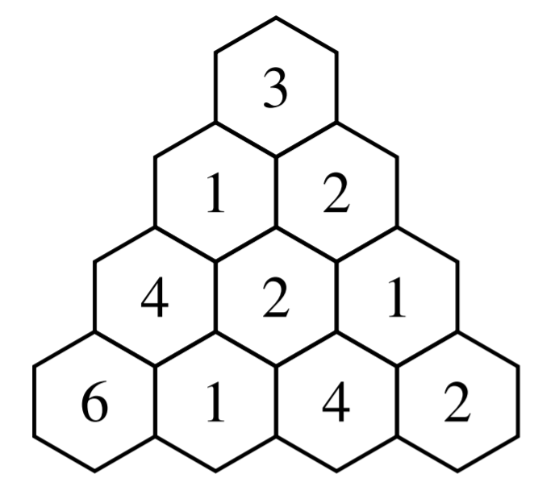

Autofill Title

Introduction
This data structure problem is from the CCC 2019 Senior Problem 5. The credit for the image above and problem statement goes to the University of Waterloo.
Here is an example of an abstract data structure that is in the shape of an equilateral triangle. For every data structure, there must be a way to store data, and retrieve information about the data structure. In this case, data is stored in each cell of the equilateral triangle, with the \(i\)-th row in the triangle containing \(i\) cells. Now, the data we are asked to retrieve is slightly strange. Given a positive integer \(k\), we must find the sum of the maximum elements of each sub-triangle of size \(k\). For instance, if \(k = 3\), the sub-triangles in the above image are \((3, 1, 2, 4, 2, 1)\), \((1, 4, 2, 6, 1, 4)\), and \((2, 2, 1, 1, 4, 2)\). The requested sum is \(4 + 6 + 4 = 14\).
Now, this data structure may seem inapplicable, however the methods used to query this data structure are certainly very useful. The algorithm we will be using for querying this data structure uses a divide an conquer approach, which is the same approach used for merge sort, and binary indexed trees. Even though we may not have much to gain from the data structure itself, there is a lot to learn from the approach to solving the problem.